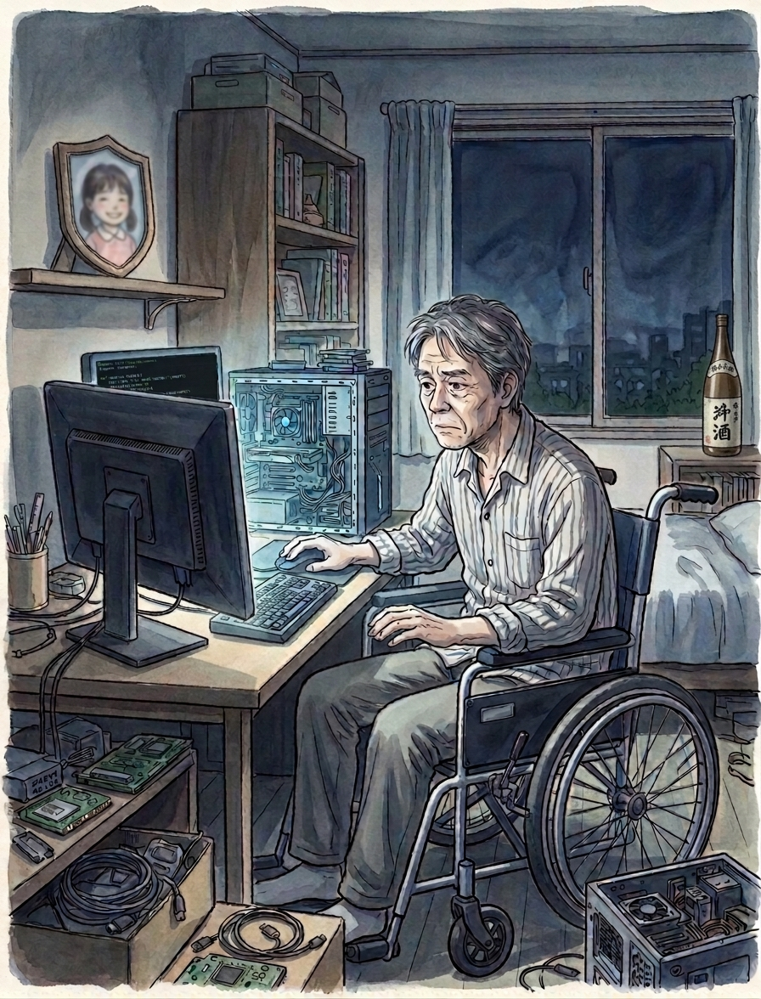
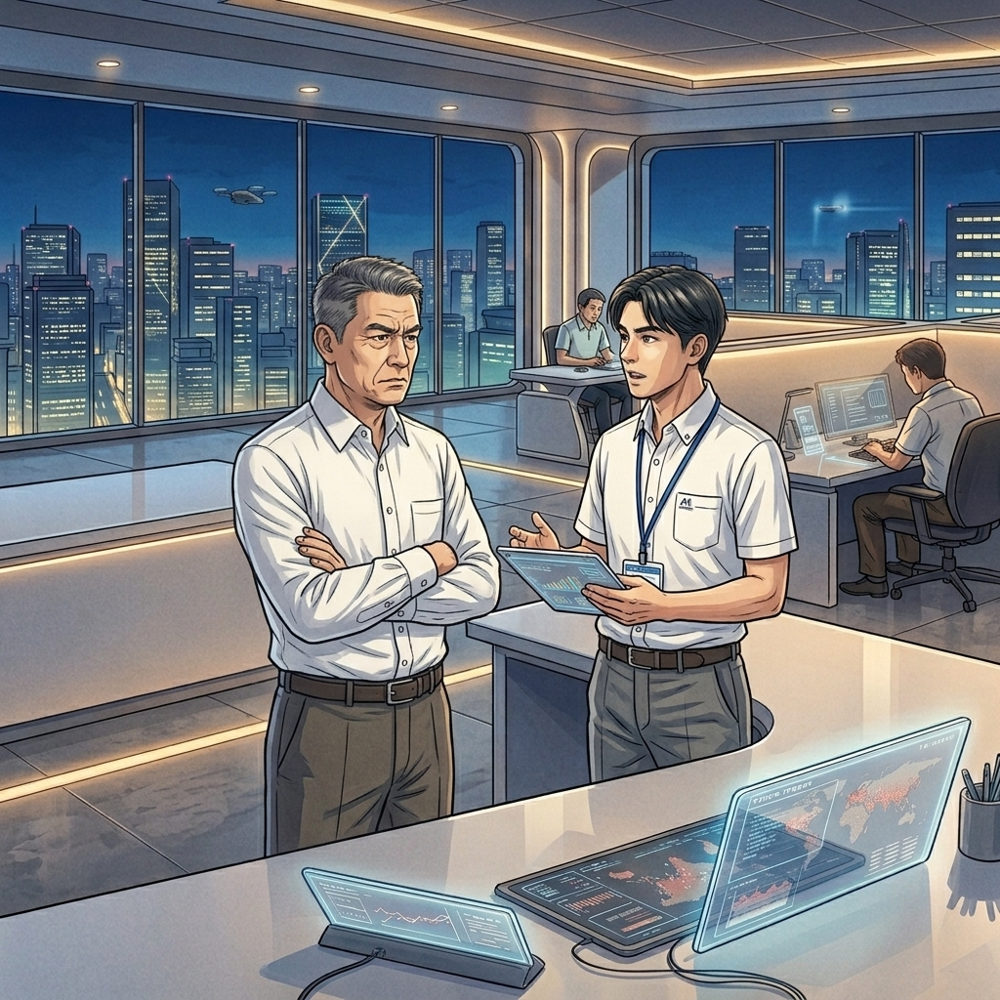

第二部 取引の歪み
第１節 転落の始まり
中田雅史、六十二歳。
若い頃の中田は、よく働く男だった。
建築現場の主任として、朝は誰より早く現場に入り、職人たちが来る頃にはその日の段取りをすべて頭に入れていた。
危険な場所があれば自分で確認し、重い資材を運ぶ若い作業員を見つければ、
「おい、貸せ」
と言って先に持ち上げた。
主任だからといって机の前に座って指示だけを出すような男ではなかった。
部下からの信頼も厚く、「中田さんに任せておけば大丈夫」と言われるのが好きだった。
自分でも、それが自分の取り柄だと思っていた。
人から信用される――それだけは裏切らないように生きてきた。
ところが五十歳を過ぎた頃、その人生が大きく変わった。
ある日、現場で強い風が吹き、フェンスが倒れた。
中田はとっさに逃げようとしたが間に合わず、下敷きになった。
命は助かったものの、もう普通に歩くことはできなかった。
医師から「一生、車椅子になる可能性が高い」と告げられ、職場の居場所もなくなり、五十一歳で早期退職した。
再就職しようにも、以前のような仕事はできない。
現場しか知らない男だった。 何十年も身体を使って働いてきたその身体が、突然使えなくなった。
そこから少しずつ生活が崩れていった。
最初は酒だった。
眠れない夜に飲み、次第に飲まなければ眠れなくなった。
パチンコや競馬にも手を出し、負ければ取り返したくなり、取り返せばまた賭けたくなった。
気がつけば、仕事をしていた頃の貯金も減っていた。
家庭も壊れた。
妻とは離婚した。
自由になったはずなのに、その自由は思っていたよりずっと寂しかった。
中田には娘が一人いた。
しおり。 四十歳のときに生まれた娘だった。
幼い頃のしおりはよく笑う子で、仕事から帰ると玄関まで走ってきて、
「パパ、おかえり」
と声を上げた。
その声を聞くのが好きだった。 疲れていても、あの声を聞けば少し元気になれた。
しかし、自分が壊れていくにつれて、娘との距離も遠くなっていった。
それでも、しおりの養育費だけは払い続けた。
大した金額ではないが、中田にとっては“父親であるための最後の約束”だった。
ある時、中田はふと思った。 このままではいけない。
まともな自分に戻りたい――そう思った。
それから酒もパチンコも競馬もやめようとした。
何度も手を出し、そしてやめることを繰り返したが、生活の荒れは少しずつ収まっていった。
収まったと言っても、金が増えるわけではない。
年金は繰り上げて受給しているが、金はない。
唯一の楽しみはパソコンだった。
事故に遭う前は仕事で使う程度だったが、車椅子になってから独学で覚えた。
AIがなんでも教えてくれる時代。ゲームを作ることも覚えた。
小さな画面の中なら、自分で世界を作ることができる。
自分は歩けないのに、ゲームの中の人間はいくらでも走れた。それが面白かった。
いつの間にか、パソコンは中田にとって単なる道具ではなく、親友になっていた。
工作好きが高じて中古の部品を集め、パソコンを少しずつ高性能に仕上げていった。
腕が上がるにつれ、他人のサーバーに入ってみることもできた。
褒められる趣味ではないが、子どもの頃にパズルを解くのと同じ感覚で楽しんだ。

第２節 不正送金
年金支給日の前日。財布は空だった。
中田はいつものように冷蔵庫を開けた。
奥に、牛乳とパンが一枚だけ残っていた。
それだけで、その日は終わった。
翌日年金が入る。それまでは空腹も辛抱するしかない。
翌朝、中田は近所のスーパーへ向かった。
店内は涼しく、その空気にほっとしながら弁当売り場へ向かった。
500円の値札の上に、80％引きのシールが貼られている。100円だ。
フードロス法で食品廃棄に課税が導入されてから、スーパーは売れ残りを「捨てる」ことも無くなった。
見切り品の棚から掘り出し物を見つけ、80％引きの弁当をカゴに入れた。
レジへ向かいながら、年金の入金を確認しようとスマートフォンを開いた。
指が止まった。 残高がいつもの桁ではない。 残高：10,936,250円。
「・・・なんだ、これ」
取引明細を開くと、見覚えのない名前でいくつもの振込が並んでいた。
一千万円超。これだけあれば、なんでも買える。
人生だって変えられる。
自分の金でないことはわかっている。
いつか取り戻される時に、少しばかりの謝礼をもらえる程度だろう。
それなら、返せないほど使ってしまった方が、今は幸せになれる気がした。
今日は土用の丑の日だった。
2,500円の鰻弁当に手を伸ばしかけて、そっと戻した。
中田は80％引きの弁当をそのままレジへ持っていった。
決めたことを崩したくなかった。
幼い頃のしおりの笑顔が、まともな自分へ引き戻してくれた。
中田は小さく「しおり」とつぶやいた。
第３節 お客様コールセンター
穂積銀行経理部の小泉茜がメールの添付ファイルを開いてから五日後、 お客様コールセンターに一本の電話が入った。
「身に覚えのない振込です。」
担当者は手順に従って確認を進める。
本人確認。 口座確認。 取引確認。
振込処理は正常に完了している。
「本日、お客様のインターネットバンキングから振込のお取引がございます」
「そんなの、してませんよ！」 男の声が大きくなった。
担当者は一瞬言葉を失った。
「今日はインターネットバンキングなんて使ってないのに、どうして振込されているんですか！」
「振込なんかしていないんです。誰かに不正利用されている可能性がある。至急調べてください！」
「不正送金の可能性として、調査を承ります」
担当者は、改めて連絡する旨を伝えて電話を切った。
記録を入力し、次の照会へ移った。
その時点では、ただの一件にすぎなかった。
銀行では毎日、膨大な数の取引が行われている。
ところが、その日の午後。 先ほどとは別の人から同じ内容の電話が入った。
「身に覚えのない振込があったんですが」
第４節 サイバーリスク管理部
不正送金の可能性として、情報はサイバーリスク管理部へ送られた。
島田友和は内容を確認する。
二件の取引。 送金元は違う。 金額も違う。
しかし、振込先は同じ。 武蔵信用金庫・田無支店の同一口座。
島田は取引記録をさらに確認した。
どちらもインターネットバンキングからの正規取引として処理されている。
インターネットバンキングシステムも異常なし。 勘定系システムも異常なし。
不審な形跡は何一つなかった。
業務終了後の時間だったが、島田はサイバーリスク管理部長の浅井孝へ報告した。
浅井「想定される原因は？」
島田「まだ分かりませんが、事件の可能性があります。」
浅井「原因不明の２件の振込で、金融庁へ報告するのか？」
島田「重大な兆候です」
浅井「兆候と事実は違う」
浅井の声は穏やかだった。 怒っているわけではない。 島田にもそれが分かっていた。
浅井は過去に一度、判断を誤ったことがある。
３年前、一部取引が停止した障害。
海外からの不審なアクセスが見つかり、それが原因だと報告した。
しかし後になって、原因は別にあったことが分かった。
報告は訂正されたが、金融庁からの問い合わせは延々と続いた。
浅井「あのとき、私は早く報告しすぎた。だから今回は、確認してからにしたい」
島田「でも、送った本人には身に覚えがない振込が同じ口座に入っている」
浅井「報告するにしても、もう少し調べるしかない」
間違っていない。 だからこそ、判断が難しかった。

第五節 拡大
翌日。 ３件目の不明振込が発生した。
そして４件目、５件目。 振込先はすべて同じ口座だった。
午前十時。 穂積銀行は警察、金融庁に事例を報告した。
その頃、サイバーリスク管理部の会議室には役員が集まっていた。
画面には取引の一覧が並んでいる。
浅井が報告した。
「どの取引も本人のＰＣからインバン（インターネットバンキング）で振込したものです。
本人が操作していないという申告が事実なら、本人のＰＣに侵入して振込操作をした可能性があります」
ある役員が言った。
「仮にＰＣに侵入できて、パスワードを入手できたとしても、パスキー認証は本人でなければ通らないのでは？」
「はい。その点は不明です。現在確認中の状況です」
穂積銀行の決断は早かった。
インターネットバンキングの取引を早急に停止した。
銀行窓口やＡＴＭはいつも通り動いていたが、 インターネットバンキング停止は大きなニュースになった。
穂積銀行は記者会見を開き、頭取が次のように発表した。
「お客様には多大なご迷惑とご心配をおかけしておりますことを、深くお詫び申し上げます。
今回の不正送金金事案については、現時点で原因の特定には至っておりません。
安全性を確保するため、インターネットバンキングのサービスを一時停止しております。
再開時期は、調査と対策の完了を確認したうえで、改めてご案内いたします。
お客様の意思によらず行われた送金につきましては、全額を補償いたします。」
ネットやマスコミでは、銀行への批判や犯人捜しが拡大した。